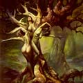

Дріади, (від грецьких слів ???????, ???? - дуб, дерево), в античній міфології німфи або божества дерев, мешканки лісів та гаїв. За віруваннями греків, дріади - дочки Зевса і дерев, жили і вмирали разом з деревом. Іноді дріади іменувалися за назвами дерев, наприклад, дріади народилися з крапель крові Урана і пов'язані з ясенем (по-грецьки ?????) іменувалися дріади-мелії або меліади, тобто ясеневі.
Дріади народжувалися разом з деревом і гинуть разом з ним, називалися гамадриада. Якщо хто-небудь з людей намагався зрубати дерево, з яким в симбіозі жила така дріада, то гамадриада благала його не робити цього вчинку. Якщо дерево з гамадриада все ж було загублено, винного в цьому, а також його потомство очікувало невідворотне відплата богів. У грецькій міфології вважалося, що люди, садять дерева і постійно доглядають за ними, користуються особливим покровительством дріад.